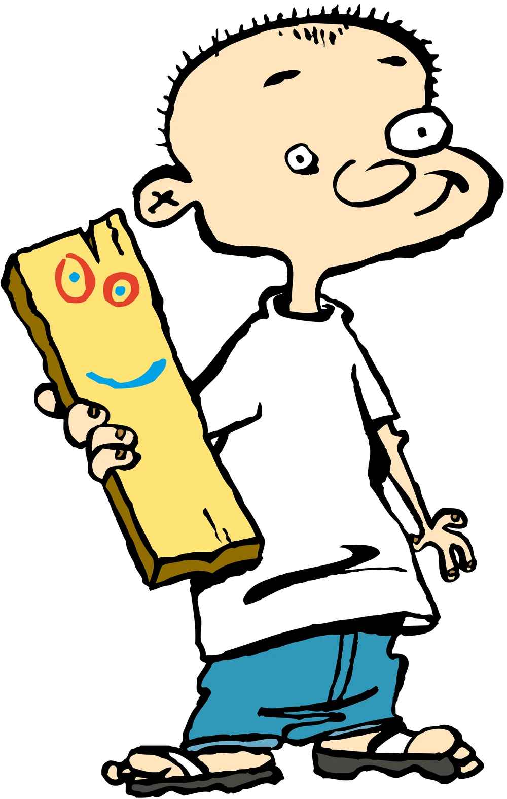

Çobanlık, Yağ tenekesi, Akademi ve Başvurular
Çobanlık, Yağ tenekesi, Akademi ve Başvurular

Bugün 5 Ocak 2026 ve bu tarihi önemli kılan birkaç neden var. Bunlardan biri ise, 2026 yılının ilk pazartesisi olması. Bu nedenle çalışmaya başlamak ve çalışmama bahanelerinden kurtulmak için harika bir gün olduğunu düşünüyorum. Yazdığım bloglara baktığımda, 2024 ve 2025 yıllarında birer adet yayımlamış olduğumu gördüm. 2026 yılı için kendime koyduğum hedeflerden biri ise daha fazla blog yazısı paylaşmak. Halihazırda sosyal medya hesaplarımı da kapatmışken, buna daha fazla zaman ayırabileceğim gibi gözüküyor. 1 dakikalık anlamsız kısa videolar arasında hipnoz olup vakit kaybetmektense, böylesi uğraşların çok daha kaliteli vakit geçirmeme olanak sağlayabileceğini düşünüyorum. Yaptıklarımı belirli aralıklarla özet hâlinde raporlamanın büyük resmi görmeme yardımcı olacağına ve beni motive edeceğine inancım tam.
Henüz biyoloji bölümüne başlamamış bir lise öğrencisiyken, Berfin Dağ, Dilanaz Arısan ve Cemre Uçaryılmaz’ın ürettiği blogları yahut videoları takip ederek motive olurdum. Hatta biyoloji okumak hakkında birtakım sorular sormak amacıyla Cemre Uçaryılmaz’a e-posta göndermiş ve çok güzel bir geri dönüş de almıştım. Kendisini maalesef 10 Temmuz 2022 tarihinde kaybettik; yüz yüze hiç tanışma fırsatı bulamamış olsam da bir yakınımı kaybetmiş kadar üzüldüm. Işıklar içinde uyuması temennisiyle! Bildiğim kadarıyla Berfin Dağ ve Dilanaz Arısan ise artık eskisi kadar aktif içerikler üretmiyor; lâkin yılda bir de olsa kendilerinin akademik anlamda ne konumda olduklarını kontrol ediyorum. Şu sıralar ise Furkan Öztürk’ün YouTube kanalında paylaştığı videolarla epey haşır neşirim. Son 2–3 yıldır neredeyse hiçbir videosunu kaçırmadan izliyorum ve böylesi bir kariyer gelişimine şahit olmak beni ciddi manada motive ediyor.
Gelelim benim durumuma: neden daha sık blog yazma kararı aldım? Yukarıdaki isimlerin başardığı kadar çok kişiye ulaşmak gibi bir amacım yok açıkçası. Bunun yanı sıra, birileri tarafından okunup okunmamanın ne kadar önemli olduğu konusu da bir muallak benim için. Günümüzde hâlâ böyle mi bilmiyorum ama ben küçükken Facebook “Profil” kısmının ismi “Zaman Tüneli” olarak değişmişti. Sanırım şu anki amacım, kendime, ileride dönüp bakabileceğim küçük çaplı bir zaman tüneli oluşturmak. Aynı zamanda, dediğim gibi, kendimi anlık olarak motive etmek.
Şimdi, giriş kısmını geçtiğimize göre anlatacaklarıma geçebilirim. Haziran 2025’te Hacettepe Üniversitesi Biyoloji Bölümünden mezun olduktan sonra bir gap year vermem benim için son derece elzemdi. Bunun temel sebebi, yüksek lisansa Türkiye’de devam etmek istemememdi. Bilime dair düşüncelerim etrafımdaki pek çok kişiden ayrışıyor; elbette benimle aynı düşünen insanlar da yok değil (bkz. Gülseli). Türkiye standartlarında, çocukluğumdan beri hayalini kurduğum bilimi yapabileceğimi pek sanmıyorum. Bunun pek çok boyutu var ve daha sonra bu konuya dair çok daha uzun bir blog yazısı paylaşmak istediğim için şimdilik yalnızca listelemekle yetineceğim: ekonomi, tembellik, akademik yapılanma (özellikle “kalıcı kadro” denen saçmalık), gelişmişlik düzeyi, bilime verilen önem, imkânlar ve bizzat yüksek lisansımda çalışmak istediğim alanda beni tatmin edebilecek bir akademisyenin bulunmaması.
Aslında lisans hayatım boyunca Prof. Dr. Çağatay Tavşanoğlu ile çalışmış olmam hasebiyle şanslı biriydim. Kendisinin Türkiye standartlarının oldukça üzerinde bir araştırmacı olması, bu sıraladığım zorlukları bir süreliğine hissetmememi sağladı. Ancak Türkiye’deki akademinin geneline baktığınızda, bu tür profesörlerin son derece istisna olduğunu ve şanslı olsanız bile karşınıza çok sınırlı sayıda çıkacağını görebilirsiniz. Elbette çok değerli ve saygın akademisyenlerimiz var; fakat ne yazık ki Türk akademisinin büyük bir kısmı böyle değil. Uzun lafın kısası, Türkiye’de devam etmeme kararımı son derece doğru buluyor ve böylesi bir kariyer planının beni çok daha fazla tatmin edeceğini düşünüyorum. Çocukluktan beri bilim insanı olma hayalim vardı. Henüz kendimi başarmış saymamakla birlikte bu hayalin kıyılarına yaklaştığımı hissedebildiğim uzun bir süreç içindeyim.
Elbette bu süreçte yaptığım yanlışlar da oldu ve bana kalırsa bunların pek çoğu bir yol gösterici eksikliğinden kaynaklanıyor. En büyük hatamın, lise sınavına çok ciddi hazırlanıp Galatasaray, Robert, Kabataş, Pertevniyal ya da Vefa gibi bir okulda okumamış olmak olduğunu düşünüyorum. Bu okullarda eğitim görmüş insanları kıskanıyorum; zira çok ciddi bir akademik eğitimin yanı sıra önemli bir vizyon da kazandıkları kesin. Günün sonunda çok çabalamış olmakla birlikte, aradaki makasın daha fazla açılmasını engellediğimi düşünüyorum. Ancak böyle bir lisede okumuş olmam durumunda, lisans eğitimimi de Hacettepe yerine dünyanın en köklü üniversitelerinden birinde geçirme ihtimalimi de ciddi ölçüde artırmış olurdum. Neyse… “Keşke” demeyi pek sevmiyorum aslında; her ne kadar bu konuda her zaman başarılı olamasam da geçmişi geçmişte bırakabilmek çok önemli. Günün sonunda, bir çobanın buraya kadar gelmiş olmasını aynaya baktıkça takdir ediyorum.
Gerçekten çoban mıy(d)ım?
Gelelim bu çobanlık meselesine. Aslında bu sorunun cevabı biraz karmaşık. Ben hikâyemi anlatayım, kararı siz verin. 20 Mart 2003’te Karabük’te dünyaya geldim. Annem ve babam 18 yaşında evlenmişler; ben doğduğumda ise 19 yaşındalarmış. O dönem babaannem ve dedemle birlikte yaşıyorlardı ve ben beş yaşına gelene kadar da bu şekilde devam etti. Ben doğduğumda babamın bir mesleği yoktu; bir buzdolabı tamircisinde yevmiye usulü çalışıyormuş. Kısa bir süre sonra askere gittiği için bebekliğime pek şahit olamamış. Hatırlayabildiğim ilk anım, babam askerden döndüğünde anneme “Anne, bu kim?” diye sormam. Anladığım kadarıyla biraz erken konuşmuşum.
Babaannemlerle birlikte yaşadığımız ev bir köy eviydi. O zaman da çok severdim, şimdi de çok seviyorum. Çok sayıda meyve ağacı, ekseriyeti bamya ekili tarlalar, üzüm bağları ve belki de benim için en önemlisi, toprakla vakit geçirebileceğim alanlar vardı. Tam hatırlamamakla birlikte, muhtemelen ben 4–5 yaşlarındayken inek almak için bir ahır (dam) inşa ettiler ve ilk ineklerini aldılar. O dönemden de bir anım var: İnşaat için alınan tahtalar arasında, izlediğim çizgi filmlerden Ed, Edd ve Eddy’deki Jonny’nin arkadaşı Kalas’ı (Figür 1) andıran düz bir tahta parçası bulmuştum. Adını da tam olarak “Kalas” koymuştum ki ahırın zemininde boş bir yer kalınca, Kalas’ı elimden alıp oraya çaktılar…

İlk aldıkları inekleri hâlâ unutmam; bir de sevmek için elimi uzattığımda elimi biberon zannedip emmeye başlayan buzağı vardı tabii. Sonraları Karabük’te başka bir eve taşınmış olsak da üniversiteye başladığım yıla kadar babaannemi ve dedemi sık sık ziyaret eder, hatta günlerce kalırdım. Tatillerde ise bu süre daha da uzardı. İnek sayıları çok fazla olmadığı için maaşlı bir çobanları yoktu; genelde kendileri güderdi. Ben de ineklerin peşinden onlarla giderdim. Neşo isminde çok net hatırladığım bir inek vardı; adını haykırdığımda dönüp gelen. Velhasıl, çobanlık yıllarım benim için huzurlu ve güzel günlerdi. Biyolojiye olan ilgimin artmasında da yadsınamaz bir payı vardır elbette. Ben üniversiteyi kazandıktan sonra (2021 yılına tekabül ediyor) yaşlandıkları için inekleri sattılar ama ahır hâlâ duruyor. Eski günleri yâd etmek için güzel bir manzara olduğu kesin.
O günlerde bilim insanı olmayı düşleyen küçük bir çoban olan ben, bugünlerde dünyanın önde gelen üniversite ve/veya enstitülerine yüksek lisans başvuruları yapıyorum. Uzun uzun düşündükçe bu durum hoşuma gidiyor; fakat mükemmeliyetçi yanım “daha iyisi olabilirdi” diye hayıflanıyor. Üniversite yıllarımda, özellikle Almanya’daki staj maceram sırasında, çalışmak istediğim konuyu netleştirmiştim: toprak ekolojisi. Bazen taşlar sonradan yerine oturuyor. Çocukluk dönemime döndüğümde toprağa olan özel ilgimi fark ediyorum; hatta o zamanlarda da bana çok kutsal gelirdi. Evde beş litrelik yağ tenekeleri boşaldığında, yatay bir yüzeyinden kesip içini toprakla doldurur; balkonda salatalık, domates ve kabak yetiştirirdim. Karınca yuvaları gibi yapıların etrafındaki toprağın neden farklı göründüğünü anlamaya çalışırdım. Sanırım küçüklük hâlimi mutlu etmenin en iyi yolunu, büyüyünce bağımsız bir şekilde buldum.
Peki başvurular ne durumda?
Ne yazık ki Avrupa ülkelerinde yüksek lisans için burs olanakları oldukça sınırlı. Dolayısıyla çok dar bir katalogdan seçim yapıyorum. Şu an için, çalışmak istediğim alana uygun birkaç Erasmus Mundus programının yanı sıra Almanya DAAD bursuna ve LMU gibi bazı üniversitelere başvuruyorum ya da başvuracağım. ETH Zürih’in bir yüksek lisans bursu vardı; gitmek için can attığım bir okul olmasına rağmen, Zürih’in son derece pahalı bir şehir olması ve burs miktarının bu pahalılığın altında ezilmesi nedeniyle bu hayal, lokanta camına ekmek banmaktan öteye gidemedi. Yine de umudum yüksek. Güzel bir üniversite ya da enstitüden kabul alacağıma inanıyorum. Zaten yüksek lisans, benim için doktora öncesi bir hazırlık basamağı gibi. Belki doktora için Ivy League üniversitelerini denerim, kim bilir? Çobanım diye Berkeley’de doktora yapmayayım mı yani…
Şimdilik bu yazının sonuna geldim. Ele aldığım konuların yer yer karmaşık ve tutarsız bir yapı sergilemesine atfen, Muharrem İnce’nin Karışık Bir Şiir adlı şiiriyle kapatmak isterim.
Karışık Bir Şiir
Yeni dünya düzeni
Globalleşme
Özelleştirme
Sanayileşme
Öpüşme
Sevişme
Enflasyon
Masturbasyon
Konut fonu
Kapama telefonu
SSK
Bağ-Kur
Kapa gözlerini, hayal kur
İşçi
İşveren
Yanaklarındaki güller yediveren
Ders, öğrenci, öğretmen
Öpüşmen
Sevişmen
Gevşemen
Atom fiziği
Dinlediğin müziği
Devrimcilik
Evcilik
Mark, dolar
Akkor hâlinde dudaklar
Ne kadar da karıştı her şey
Hayret ki ne hayret bir şey!…(Muharrem İnce, Tatanka, s. 54)